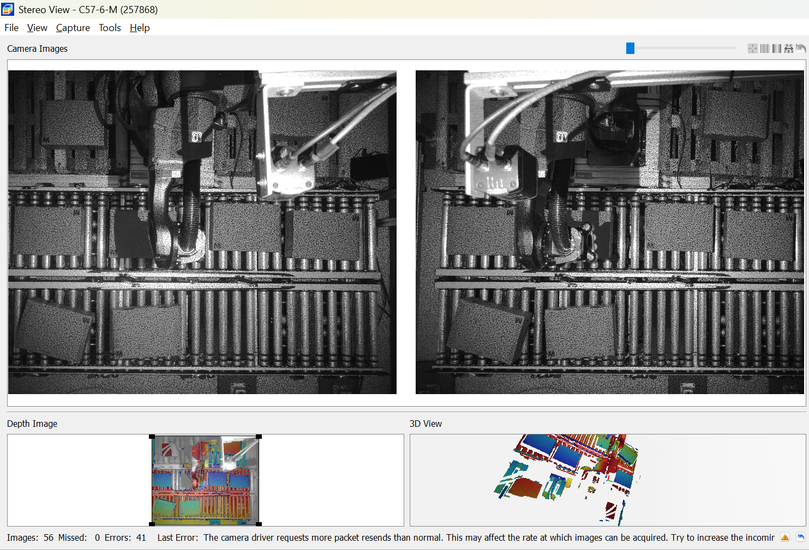
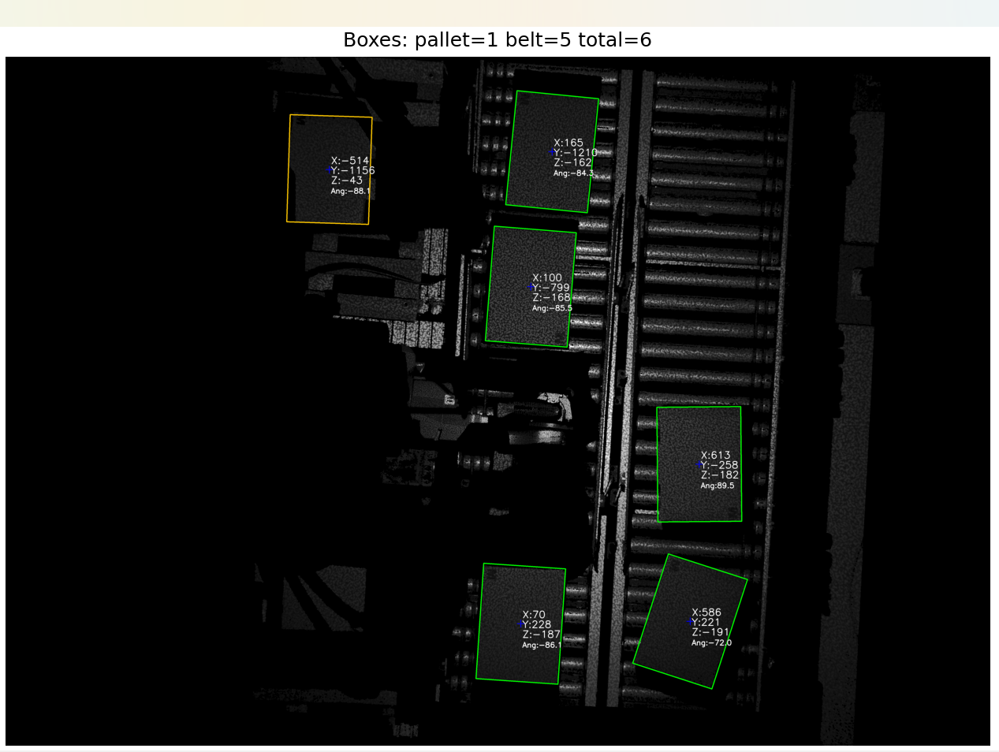

Software installation (Ensenso SDK)
Goal: install Ensenso SDK, NxView, and NxLib so you can open the device and capture depth data.
- Download the official Ensenso SDK
- Install on Windows or Linux
- Open NxView and confirm it starts
- Optionally validate Python bindings
Official guide: Software Installation
Expected outcome
NxView opens and your device appears in the list without errors.
- NxView starts without warnings
- Device is visible in the list
- You can open it and see depth
Hardware installation
Goal: stable Ethernet connection and correct power so NxView can detect the device.
- Connect Ethernet (camera ↔ PC/network)
- Provide power (PoE or 24V depending on model)
- If not detected, verify IP and use the Network Wizard
Official guide: Hardware Installation
Quick troubleshooting
NxView basics
Goal: open the device and verify depth/3D is stable before writing code.
- Start NxView
- Find the camera in the device list
- Open the device
- Verify depth visualization
Official guide: Basic NxView Usage
Before you code
- ✅Device opens without warnings
- ✅Depth looks reasonable (no huge artifacts)
- ✅Network is stable (no disconnects)
Getting 3D data (PointMap) with NxLib
Goal: produce a PointMap (H×W×3) for measurement and detection.
- Open
- Capture
- Rectify
- ComputeDisparityMap
- ComputePointMap
Official guide: Grabbing 3D Data
Next step
With a PointMap, typical processing is: Z ROI → height segmentation → contours → minimum-area rectangles → centers.
Search scrolls to the first match inside opened blocks.
Nx Interface
This is how the Nx interface should look once the camera is properly connected and depth data is being rendered.

Box Detection Result
Example of how the algorithm should identify boxes and overlay X, Y, Z coordinates with orientation.
